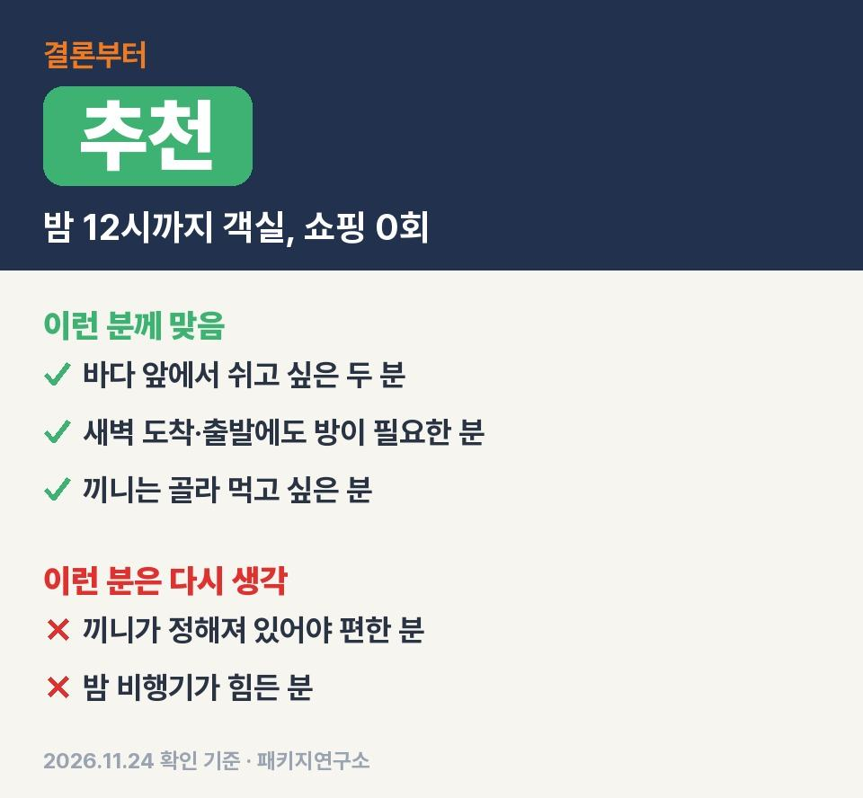
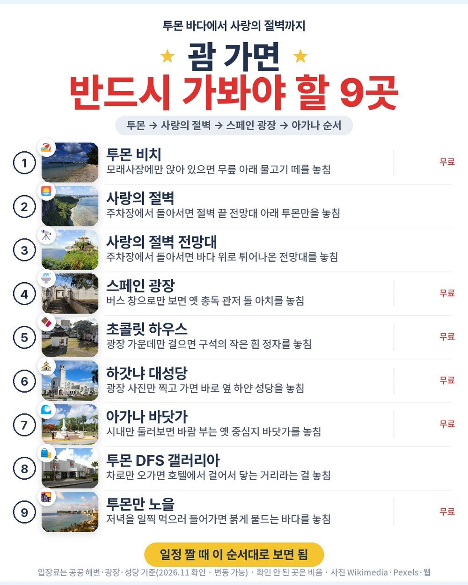
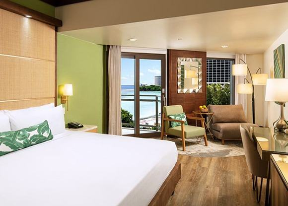
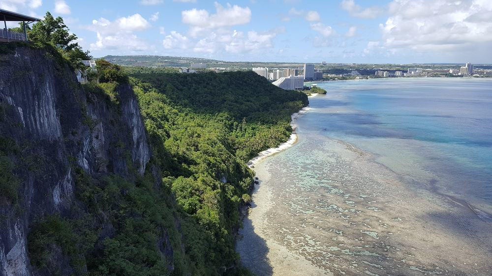

새벽 1시 10분에 내려도 그 길로 방에 들어가고 떠나는 날엔 밤 12시 체크아웃이라 새벽 비행기 전까지 침대가 있는 괌 4박 5일임.
다녀온 후기가 아니라 노랑풍선 일정표와 포함·불포함 원문을 하나씩 따져 본 글임.
결론 — 추천. 진에어 직항 왕복, 투몬 해변 앞 두짓 비치 리조트 디럭스 오션뷰 객실, 마지막 밤 레이트 체크아웃, 와이파이·여행자보험까지 94만 9천원 안에 있고 단체 쇼핑은 0. 다만 끼니가 정해져 있어야 편한 분은 다시 따져 볼 것.

오늘 기준 출발일별 요금 보기
https://naver.me/5WUMACBG

| 항목 | 내용 |
|---|---|
| 가격 | 1인 949,000원 (성인 · 12월 출발 기준) · 소아 519,000원 · 2인 1,898,000원 |
| 여행사 | 노랑풍선 |
| 항공 | 진에어 직항 (LJ915·LJ916) · 갈 때 19:55 출발 01:10 도착 / 올 때 02:20 출발 06:10 인천 |
| 숙소 | 두짓 비치 리조트 괌 디럭스 오션뷰 (세미더블 침대 2개 · 바다가 일부 보이는 방) |
| 일정 | 4박 5일 · 자유 일정 위주 · 식사 0번 · 쇼핑 0 · 선택관광 1개(성인 10달러) |
▶ 내 출발일 오늘 기준 요금 확인 (제휴 링크 · 예약 시 수수료를 받으며 가격은 같습니다)
▶ 11월 24일 기준 괌·사이판 패키지 최저 79만 9천원부터 — 출발일별 값 한 화면에: 비교 페이지
| 번호 | 내용 | 한 줄 답 |
|---|---|---|
| 1 | 이 값에 들어 있는 것 | 밤 12시 체크아웃 |
| 2 | 현장에서 더 낼 돈 | 2인 40달러 + 식비 |
| 3 | 일정과 체력 | 버스 거의 없음 |
| 4 | 자유여행으로 짜면 | 항공값 조회 실패 |
| 5 | 맞는 분 · 안 맞는 분 | 3 대 3 |
직항 왕복과 바다 앞 호텔, 그리고 새벽 비행기 전까지 방을 쓰는 레이트 체크아웃이 한 값임.
- 항공: 진에어 인천–괌 직항 왕복, 각종 세금 포함 · 부치는 짐 1인 23kg 2개
- 숙소: 두짓 비치 리조트 괌 디럭스 오션뷰, 2인 1실, 세미더블 침대 2개
- 마지막 날: 레이트 체크아웃 — 5일차 00시 체크아웃
- 덤: 도착일 객실 생수 2병, 전 객실 와이파이, 여행자보험
- 공항: 왕복 픽업 밴(경비는 현지에서 따로)

이 상품에서 제일 쓸모 있는 줄은 레이트 체크아웃임. 올 때 비행기가 새벽 2시 20분이라 보통이면 오후에 방을 비우고 로비에서 버텨야 하는데 이건 밤까지 씻고 쉬다 나가면 됨. 갈 때도 새벽 1시 10분에 내려 바로 체크인임.
꼭 내는 돈은 공항 픽업 경비 1인 20달러뿐이고 나머지는 밥값임.
| 항목 | 금액 | 필수/선택 | 비고 |
|---|---|---|---|
| 공항 왕복 픽업 경비 | 40달러 (약 5만 4천원) | 필수 | 성인 20달러 × 2 · 개별 이동해도 냄 |
| 괌 아일랜드 관광 | 20달러 (약 2만 7천원) | 선택 | 성인 10달러 × 2 · 출발 7일 전까지 신청 |
| 호텔 조식 추가 | 1인 12만원 | 선택 | 전 일정분 · 성인 기준 |
| 점심·저녁 | 직접 | 필수 | 전 일정 식사 불포함 |
| 합계 (2인 필수분) | 약 5만 4천원 + 식비 | 상품가 2인 1,898,000원 별도 |
- 환율은 1달러 약 1,344원으로 셈 (2026년 11월 23일)
- 1인 예약이면 독실 사용료가 붙고 금액은 예약 확인 전화 때 안내함
정해진 버스 일정은 2일차 섬 관광 2시간 하나라 체력 부담은 거의 없음.
| 일차 | 가는 곳 | 버스 | 걷기 | 점심 · 저녁 |
|---|---|---|---|---|
| DAY 1 | 인천 19:55 → 괌 01:10 → 밴으로 호텔 → 체크인 | 약 20분 | 적음 | 없음 · 기내 스낵 |
| DAY 2 | (선택) 섬 관광 — 사랑의 절벽 → 스페인 광장 → 아가나 | 약 30분 | 적음 | 개별 · 개별 |
| DAY 3 | 자유 — 투몬 중심가, DFS 갤러리아 | 없음 | 보통 | 개별 · 개별 |
| DAY 4 | 자유 — 투몬 비치 → 밤까지 객실 | 없음 | 적음 | 개별 · 개별 |
| DAY 5 | 00시 체크아웃 → 괌 02:20 → 인천 06:10 | 약 20분 | 적음 | 없음 · 없음 |
- 공항에선 입국장 오른쪽 출구 모니터 앞에서 가이드를 만나고 다른 호텔 손님 10~15명과 밴을 같이 탐
- 체크인은 바우처 없이 여권으로 함
- 투몬 바다는 얕지만 바닥 산호가 거칠어서 아쿠아슈즈가 있으면 편함

밤 비행기가 두 번이라는 건 분명 부담임. 그래도 두 밤 모두 방이 잡혀 있어서 공항 의자에서 쪽잠 잘 일은 없음. 부모님 모시고 가면 이 차이가 큼.
같은 목적지 다른 여행사 패키지, 쇼핑·선택관광·가이드 경비까지 비교
https://pkg-lab.com/dest/GUM/m/2026-12/?utm_source=ghpages&utm_medium=post&utm_campaign=daily
항공값을 오늘 조회하지 못해 합계는 안 냈고 직접 짤 때 따로 챙길 칸만 적음.
| 항목 | 금액 | 근거 |
|---|---|---|
| 인천–괌 직항 왕복 | 확인 못 함 | 2026-11-24 마이리얼트립 조회 실패 — 숫자를 지어내지 않음 |
| 호텔 + 새벽 체크인·밤 체크아웃 | 확인 못 함 | 날짜·객실마다 다름 |
| 식사 | 따로 | 패키지도 불포함 |
| 공항 이동 | 따로 | 패키지는 왕복 밴(경비 20달러) |
| 여행자보험 | 따로 | 패키지는 포함 |
| 가이드 | — | 자유여행은 없음 · 패키지는 공항 미팅만 |
- 새벽 도착이면 전날 밤부터 방을 잡아야 바로 들어갈 수 있음
- 이 상품은 식사·관광이 원래 없어서 자유여행과 차이가 나는 칸은 항공·호텔·공항 이동 정도임
걸리는 건 식사·전망·밤 비행기이고 누구에게만 문제인지 분명함.
| 맞는 분 | 안 맞는 분 |
|---|---|
| 단체 관광 없이 바다 앞에서 쉬고 싶은 두 분 | 끼니가 정해져 있어야 편한 분 |
| 새벽 도착·출발에도 방에서 쉬고 싶은 분 | 방에서 바다가 정면으로 꽉 차야 하는 분 |
| 끼니를 그날 기분대로 골라 먹고 싶은 분 | 밤 비행기가 많이 힘든 분 |
이 상품 게시판엔 아직 후기가 없음. 같은 호텔에 묵어 본 사람들 글을 보면 해변과 쇼핑몰이 문 앞이라 걸어 다니기 편했다는 말이 제일 많음. 체크인 줄이 길 때가 있어서 도착하면 번호표부터 받으라는 요령도 자주 보임.
Q. 괌 패키지 가격은 얼마인가요?
A. 이 상품은 12월 출발 기준 1인 94만 9천원, 2인 189만 8천원. 출발일마다 값이 달라서 날짜별로 확인해야 함.
Q. 식사가 포함되나요?
A. 안 됨. 전 일정 식사 불포함임. 호텔 조식은 전 일정분을 성인 12만원에 더할 수 있음.
Q. 괌 가려면 비자가 필요한가요?
A. 무비자지만 전자여행허가 G-CNMI ETA(무료)나 ESTA가 꼭 있어야 함. 출발 5~7일 전엔 승인을 받아 두라고 원문에 나옴. 전자 세관신고는 도착 72시간 전부터 씀.
새벽에 와서 새벽에 가는 괌 일정의 불편을 레이트 체크아웃 하나로 꽤 덜어 낸 상품임.
끼니를 직접 고르는 게 즐거운 두 분께 잘 맞음.
출발일에 따라 값이 달라서 가시려는 날짜 요금부터 확인하시면 됨.
오늘 기준 출발일별 요금 보기
https://naver.me/5WUMACBG
이 글에는 네이버 제휴 링크가 포함되어 있으며, 링크를 통해 예약하시면 일정 수수료를 받습니다. 가격은 동일합니다. 가격과 구성은 2026년 11월 24일 확인 기준이며 출발일에 따라 달라질 수 있습니다.
▶ 이 상품, 영상으로 보기 (유튜브)
▶ 괌·사이판 패키지 오늘 값 나란히 비교
▶ 같은 목적지 다른 여행사 패키지, 쇼핑·선택관광·가이드 경비까지 비교: pkg-lab.com
_in_Guam_in_June_2017.jpg){kind=link}
.jpg){kind=link}